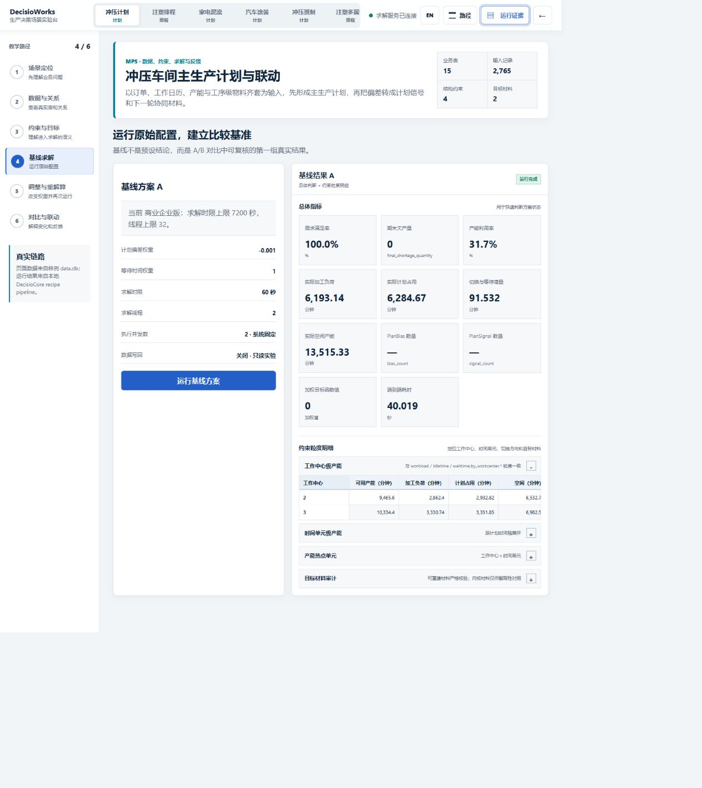
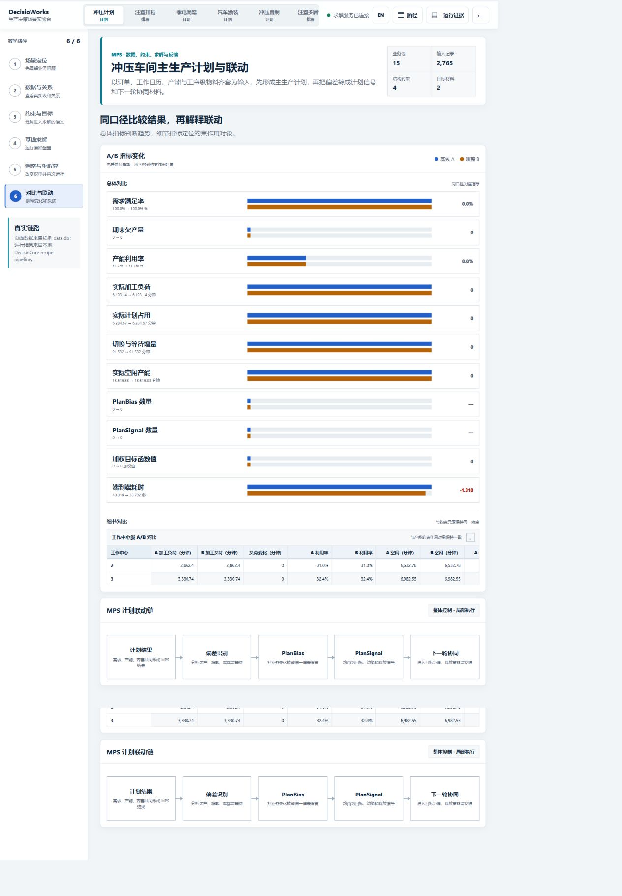

适用于 DecisioWorks v1.4.0
冲压计划案例：从 1920 条订单明细到受控计划链
本案例使用标准样例 StampingWorkshop/data.db 与官方
production_planning 配方。2026-08-31
的只读检查确认数据库完整性为 ok，包含 1920 条订单明细、50
条产能记录、38 条工艺与工序级物料关系、500 条齐套记录、25 个时间单元和 3
个工作中心。
1. 输入数据
订单通过 order_item
表达制品、交期和数量；制品经工艺路线和工序连接工作中心；ingredient
把物料需求绑定到工序；kitting_information
表达各时间单元的物料可用量；capacity.used
表达已有产能占用比例。
2. 约束与目标
官方配方启用产能、需求和齐套约束，产能采用软约束，不启用库存约束。目标使用
job_bias=-0.001 与
waittime=1.0，并把交期/完工期压力桥接为车间计划中的累计等待时间材料。求解配置为
16 线程、120 秒；实际可用上限仍由发行版和授权控制。
3. 处理流程
数据采集 → 约束解析 → 方案生成 → 方案选择 → 结果评估 → 可选结果派发。标准数据库不会被结果派发动作写回；只有显式配置的独立 JSON 结果文件可以持久化。
4. 输出与解释
| 输出 | 阅读方式 | 验收问题 |
|---|---|---|
| 计划结果 | 按时间、工作中心和工序查看数量 | 是否覆盖需求且保持时间坐标一致 |
| 交付偏差 | 下钻到制品或订单 | 风险来自数量、时间还是释放策略 |
| 工作中心负荷 | 同时看总体与时间单元 | 瓶颈是否被平均值掩盖 |
| 空闲与等待 | 使用明确时间单位 | 是否由齐套、产能或目标取舍造成 |
| 目标材料审计 | 核对方向、权重和语义 | 加权值是否被误当成实际业务量 |
基线与重算应使用相同数据版本，只调整少量目标、规则或资源条件，并保留前后配置差异。
5. 证据说明
2026-08-31，本案例在隔离的商业版副本中使用有效
Enterprise 授权完成了新的真实运行。正式 API 基线采用 16
线程、120 秒上限，14.41 秒返回
ok；调整方案采用相同数据、约束和求解资源，仅把
job_bias 从 -0.001 调整为
-0.003、waittime 从 1.0 调整为
2.0，14.29 秒返回 ok。两次运行均产生 1
个候选解、有效最佳方案、66 条结果和 12 个动作事件，错误数为 0。
基线结果中，总需求与总产出均为 680,500，最终短缺为 0，需求满足率为
100%；可用产能为 1,188,000，加工负荷为
371,588.48，含准备与等待的计划负荷为 377,080.42，利用率约
31.74%。本次权重调整没有改变这些计划结果，但 job_bias
的加权贡献由 -7,854.678 变为
-23,564.034。这说明权重已进入目标材料计算，同时也说明“调整权重”不等于“结果必然变化”：在当前数据与约束下，同一计划仍可能保持稳定。



截图由商业版场景实验台真实加载和运行生成。页面复现使用教学页配置的 2 线程、60 秒并成功完成；API 证据使用本节列出的 16 线程、120 秒配置。公开运行记录保留版本、授权等级、参数、指标和文件哈希。本次结果用于证明该发行版本与样例链路可运行，客户环境仍需完成数据、性能和业务验收。